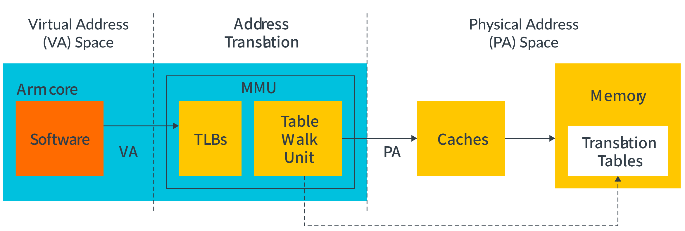
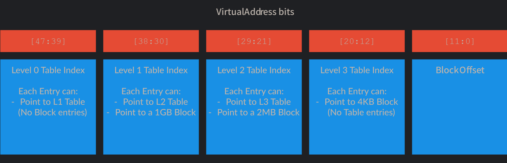
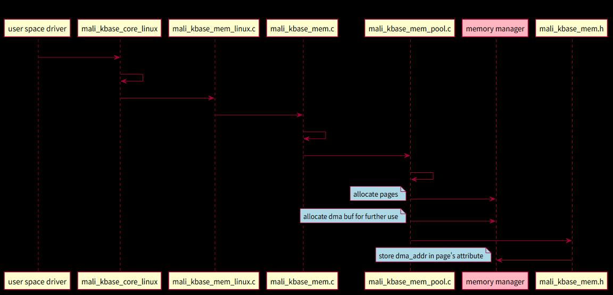
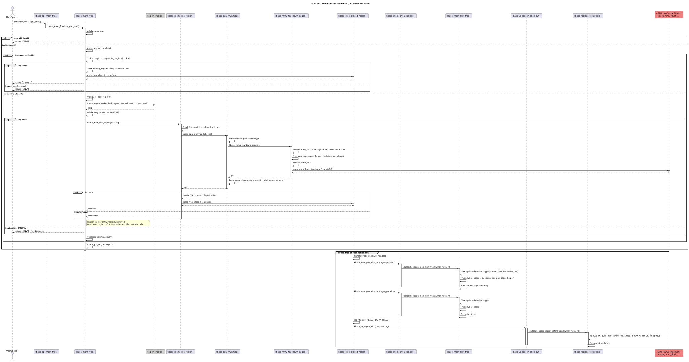
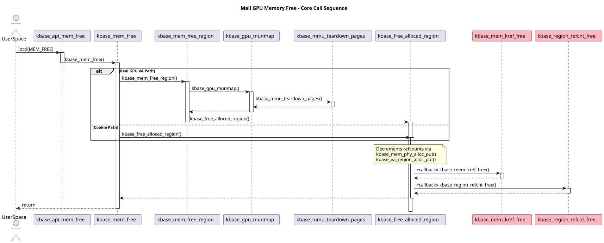
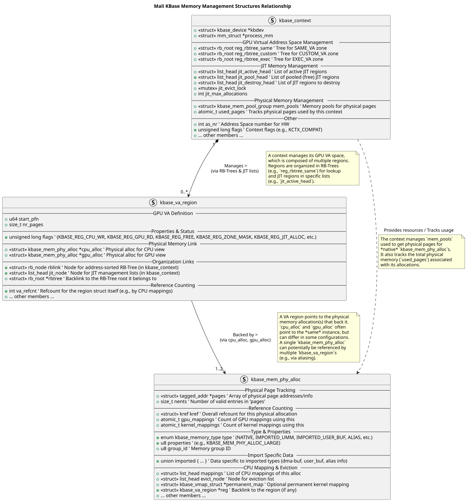

AArch64 memory management¶
内存管理描述了如何控制对系统中内存的访问。每次操作系统或应用程序访问内存时，硬件都会执行内存管理。内存管理是为应用程序动态分配内存区域的一种方法。
应用程序处理器设计用于运行丰富的操作系统，如Linux，并支持虚拟内存系统。在处理器上执行的软件只能看到虚拟地址，处理器将其转换为物理地址。这些物理地址呈现给内存系统，并指向内存中的实际物理位置。
Address Spaces¶
虚拟内存可以控制呈现给应用程序的内存地址，便于沙盒化和安全性；虚拟内存还可以将碎片化内存以连续的方式呈现给应用程序；而且软件开发人员不需要担心物理内存。
虚拟内存和物理内存之间的映射是通过页表完成的。有时需要两次页表映射才能从虚拟地址转换到物理地址。
处理器的安全状态决定了虚拟地址能够映射到的物理地址类型，分别有非安全状态、安全状态、域状态和根状态（最高权限状态），只能向该状态及以下的内存地址进行映射，其中根状态能够映射到任意物理地址空间。
64位架构系统的内存地址自然也是64位的。
内核空间和应用空间（用户空间）有着不同的转换表，这意味着两个空间的映射是分开存储的。
地址空间的每个区域的大小最多为55位，也可以独立地缩小到更小的尺寸。
不同的处理器对物理地址位数的支持不尽相同。
内核映射是全局转换，而应用程序映射是非全局转换。全局转换适用于当前正在运行的任何应用程序。非全局转换仅适用于特定的应用程序。
非全局映射在TLB中使用ASID标记。在进行TLB查找时，将TLB表项中的ASID与当前选择的ASID进行比较。如果它们不匹配，则不使用TLB项。
不同程序可能有相同的虚拟地址。允许多个应用程序的TLB项在缓存中共存，由ASID决定使用哪个项。
EL0/EL1转换也可以用虚拟机标识符（VMID）标记。vmid允许来自不同vm的转换在缓存中共存。这类似于asid处理来自不同应用程序的转换的方式。在实践中，这意味着一些转换将被标记为VMID和ASID，并且两者必须匹配才能使用TLB条目。（EL0和EL1是处理器的不同异常级别）
多处理器的ASID和VMID并不能保证能够互用，这意味着一个处理器创建的TLB项不能保证可以被另一个处理器使用。但实际上ASID大多能在多处理器上保持一致，所以TLB也是多处理器通用的。
MMU¶
内存管理单元包含TLB和Table Walk Unit（页表遍历模块）。
MMU先从TLB里找地址转换项，找不到就用TWU遍历页表来找。

转换表的工作原理是将虚拟地址空间划分为大小相等的块，并在每个块中提供一个表项。（和体系结构差不多，不写了）

如果禁用MMU，那么输入与地址和输出地址便会相同。
Main KBASE IOCTLs (KBASE_IOCTL_TYPE 0x80)¶
| Macro Name | Cmd Nr | Direction | Data Structure/Union | Description | Key Members (Input in/Output out) |
|---|---|---|---|---|---|
KBASE_IOCTL_VERSION_CHECK |
0 | R/W | struct kbase_ioctl_version_check |
Checks version compatibility between userspace and kernel driver. | in/out: major (__u16), minor (__u16) |
KBASE_IOCTL_SET_FLAGS |
1 | W | struct kbase_ioctl_set_flags |
Sets kernel context creation flags. | in: create_flags (__u32) |
KBASE_IOCTL_GET_GPUPROPS |
3 | W | struct kbase_ioctl_get_gpuprops |
Reads GPU properties into a user-provided buffer. Returns bytes needed if size is 0, bytes written otherwise. |
in: buffer (__u64), size (__u32), flags (__u32) |
KBASE_IOCTL_MEM_ALLOC |
5 | R/W | union kbase_ioctl_mem_alloc |
Allocates GPU virtual and optionally physical memory. | in: va_pages, commit_pages, extent, flags (all __u64) <br> out: flags, gpu_va (all __u64) |
KBASE_IOCTL_MEM_QUERY |
6 | R/W | union kbase_ioctl_mem_query |
Queries properties (commit size, VA size, flags) of a GPU memory region. | in: gpu_addr, query (both __u64) <br> out: value (__u64) |
KBASE_IOCTL_MEM_FREE |
7 | W | struct kbase_ioctl_mem_free |
Frees a GPU memory region allocated via MEM_ALLOC. |
in: gpu_addr (__u64) |
KBASE_IOCTL_HWCNT_READER_SETUP |
8 | W | struct kbase_ioctl_hwcnt_reader_setup |
Sets up a hardware counter reader/dumper. Returns a file descriptor on success. | in: buffer_count, jm_bm, shader_bm, tiler_bm, mmu_l2_bm (all __u32) |
KBASE_IOCTL_HWCNT_ENABLE |
9 | W | struct kbase_ioctl_hwcnt_enable |
(Deprecated/Internal?) Seems related to enabling HW counter collection with specific bitmasks and a dump buffer. | in: dump_buffer (__u64), jm_bm, shader_bm, tiler_bm, mmu_l2_bm (all __u32) |
KBASE_IOCTL_HWCNT_DUMP |
10 | None | (None) | Triggers a hardware counter dump. | N/A |
KBASE_IOCTL_HWCNT_CLEAR |
11 | None | (None) | Clears hardware counters. | N/A |
KBASE_IOCTL_HWCNT_SET |
32 | W | struct kbase_ioctl_hwcnt_values |
Sets dummy hardware counter values (likely for testing/simulation). | in: data (__u64), size (__u32) |
KBASE_IOCTL_DISJOINT_QUERY |
12 | R | struct kbase_ioctl_disjoint_query |
Queries a kernel counter tracking disjoint events (e.g., context switches affecting counters). | out: counter (__u32) |
KBASE_IOCTL_GET_DDK_VERSION |
13 | W | struct kbase_ioctl_get_ddk_version |
Retrieves the kernel driver version string into a user buffer. Returns bytes written. | in: version_buffer (__u64), size (__u32) |
KBASE_IOCTL_MEM_JIT_INIT_OLD |
14 | W | struct kbase_ioctl_mem_jit_init_old |
(Old Version) Initializes the JIT memory allocator zone. | in: va_pages (__u64) |
KBASE_IOCTL_MEM_JIT_INIT |
14 | W | struct kbase_ioctl_mem_jit_init |
Initializes the JIT memory allocator zone with more options (max allocations, trim level). | in: va_pages (__u64), max_allocations (__u8), trim_level (__u8) |
KBASE_IOCTL_MEM_SYNC |
15 | W | struct kbase_ioctl_mem_sync |
Performs cache maintenance (clean/invalidate) on a region mapped in both GPU and CPU space. | in: handle (GPU VA), user_addr, size (all __u64), type (__u8) |
KBASE_IOCTL_MEM_FIND_CPU_OFFSET |
16 | R/W | union kbase_ioctl_mem_find_cpu_offset |
Given a CPU address within a mapped GPU region, finds the offset from the start of the GPU region. | in: gpu_addr, cpu_addr, size (all __u64) <br> out: offset (__u64) |
KBASE_IOCTL_GET_CONTEXT_ID |
17 | R | struct kbase_ioctl_get_context_id |
Retrieves the unique ID of the current kernel context. | out: id (__u32) |
KBASE_IOCTL_TLSTREAM_ACQUIRE |
18 | W | struct kbase_ioctl_tlstream_acquire |
Acquires a Trace L STREAM (TLStream) file descriptor for tracing. | in: flags (__u32) |
KBASE_IOCTL_TLSTREAM_FLUSH |
19 | None | (None) | Flushes the TLStream buffer. | N/A |
KBASE_IOCTL_MEM_COMMIT |
20 | W | struct kbase_ioctl_mem_commit |
Changes the amount of physical memory backing a GPU virtual region. | in: gpu_addr, pages (both __u64) |
KBASE_IOCTL_MEM_ALIAS |
21 | R/W | union kbase_ioctl_mem_alias |
Creates a new GPU VA mapping that aliases one or more existing memory regions. | in: flags, stride, nents, aliasing_info (ptr) (all __u64) <br> out: flags, gpu_va, va_pages (all __u64) |
KBASE_IOCTL_MEM_IMPORT |
22 | R/W | union kbase_ioctl_mem_import |
Imports external memory (e.g., dma-buf) for use by the GPU. | in: flags, phandle (both __u64), type (__u32) <br> out: flags, gpu_va, va_pages (all __u64) |
KBASE_IOCTL_MEM_FLAGS_CHANGE |
23 | W | struct kbase_ioctl_mem_flags_change |
Modifies the flags (e.g., caching, permissions) of an existing GPU memory region. | in: gpu_va, flags, mask (all __u64) |
KBASE_IOCTL_STREAM_CREATE |
24 | W | struct kbase_ioctl_stream_create |
Creates a synchronization stream (timeline) and returns a file descriptor. | in: name (char[32]) |
KBASE_IOCTL_FENCE_VALIDATE |
25 | W | struct kbase_ioctl_fence_validate |
Validates if a given file descriptor refers to a valid sync fence. | in: fd (int) |
KBASE_IOCTL_MEM_PROFILE_ADD |
27 | W | struct kbase_ioctl_mem_profile_add |
Adds memory profiling information (accessible via debugfs). | in: buffer (__u64), len (__u32) |
KBASE_IOCTL_STICKY_RESOURCE_MAP |
29 | W | struct kbase_ioctl_sticky_resource_map |
Permanently maps external resources (identified by GPU VA) into the context's page tables. | in: count, address (ptr to array) (both __u64) |
KBASE_IOCTL_STICKY_RESOURCE_UNMAP |
30 | W | struct kbase_ioctl_sticky_resource_unmap |
Unmaps previously permanently mapped sticky resources. | in: count, address (ptr to array) (both __u64) |
KBASE_IOCTL_MEM_FIND_GPU_START_AND_OFFSET |
31 | R/W | union kbase_ioctl_mem_find_gpu_start_and_offset |
Given a GPU address within a region, finds the start address of the region and the offset of the given address within it. | in: gpu_addr, size (both __u64) <br> out: start, offset (both __u64) |
KBASE_IOCTL_CINSTR_GWT_START |
33 | None | (None) | Starts GPU Write Tracking (GWT) for Command Instrumention (CINSTR). | N/A |
KBASE_IOCTL_CINSTR_GWT_STOP |
34 | None | (None) | Stops GPU Write Tracking (GWT). | N/A |
KBASE_IOCTL_CINSTR_GWT_DUMP |
35 | R/W | union kbase_ioctl_cinstr_gwt_dump |
Dumps the addresses and sizes (in pages) of memory areas modified by the GPU since GWT started. | in: addr_buffer, size_buffer (both __u64), len (__u32) <br> out: no_of_addr_collected (__u32), more_data_available (__u8) |
KBASE_IOCTL_MEM_EXEC_INIT |
38 | W | struct kbase_ioctl_mem_exec_init |
Initializes the EXEC_VA memory zone (likely for executable shader code). | in: va_pages (__u64) |
Test IOCTLs (KBASE_IOCTL_TEST_TYPE 0x81)¶
These are only available if MALI_UNIT_TEST is defined during kernel build.
| Macro Name | Cmd Nr | Direction | Data Structure | Description | Key Members (Input in/Output out) |
|---|---|---|---|---|---|
KBASE_IOCTL_TLSTREAM_TEST |
1 | W | struct kbase_ioctl_tlstream_test |
Starts a TLStream test with configurable parameters. | in: tpw_count, msg_delay, msg_count, aux_msg (all __u32) |
KBASE_IOCTL_TLSTREAM_STATS |
2 | R | struct kbase_ioctl_tlstream_stats |
Reads TLStream statistics generated during a test run. | out: bytes_collected, bytes_generated (both __u32) |
Customer Extension IOCTLs (KBASE_IOCTL_EXTRA_TYPE 0x82)¶
This type is reserved for custom additions by integrators. No specific IOCTLs are defined in this base header file under this type.
GPU Property Keys (Used with KBASE_IOCTL_GET_GPUPROPS)¶
These are keys used within the buffer passed to KBASE_IOCTL_GET_GPUPROPS. The lower 2 bits of the key indicate the size of the following value (00=u8, 01=u16, 10=u32, 11=u64).
| Property Name | Key Value | Description | Value Size Type (Implied) |
|---|---|---|---|
KBASE_GPUPROP_PRODUCT_ID |
1 | GPU Product ID | u16 |
KBASE_GPUPROP_VERSION_STATUS |
2 | Version status (e.g., alpha, beta, production) | u32 |
KBASE_GPUPROP_MINOR_REVISION |
3 | Minor revision number | u16 |
KBASE_GPUPROP_MAJOR_REVISION |
4 | Major revision number | u32 |
KBASE_GPUPROP_GPU_FREQ_KHZ_MAX |
6 | Maximum GPU frequency in kHz | u32 |
KBASE_GPUPROP_LOG2_PROGRAM_COUNTER_SIZE |
8 | Log2 of the program counter size in bits | u32 |
KBASE_GPUPROP_TEXTURE_FEATURES_0.._3 |
9-11, 80 | Texture feature registers (bitfields) | u32 |
KBASE_GPUPROP_GPU_AVAILABLE_MEMORY_SIZE |
12 | Total GPU-accessible memory size (bytes) | u64 |
KBASE_GPUPROP_L2_LOG2_LINE_SIZE |
13 | Log2 of L2 cache line size in bytes | u16 |
KBASE_GPUPROP_L2_LOG2_CACHE_SIZE |
14 | Log2 of total L2 cache size in bytes | u32 |
KBASE_GPUPROP_L2_NUM_L2_SLICES |
15 | Number of L2 cache slices | u16 |
KBASE_GPUPROP_TILER_BIN_SIZE_BYTES |
16 | Tiler bin size in bytes | u32 |
KBASE_GPUPROP_TILER_MAX_ACTIVE_LEVELS |
17 | Maximum active hierarchical tiling levels | u16 |
KBASE_GPUPROP_MAX_THREADS |
18 | Maximum threads per core | u32 |
KBASE_GPUPROP_MAX_WORKGROUP_SIZE |
19 | Maximum workgroup size (threads) | u16 |
KBASE_GPUPROP_MAX_BARRIER_SIZE |
20 | Maximum barrier size (threads) | u32 |
KBASE_GPUPROP_MAX_REGISTERS |
21 | Maximum registers per thread | u16 |
KBASE_GPUPROP_MAX_TASK_QUEUE |
22 | Maximum tasks in queue (?) | u32 |
KBASE_GPUPROP_MAX_THREAD_GROUP_SPLIT |
23 | Maximum thread group split factor | u16 |
KBASE_GPUPROP_IMPL_TECH |
24 | Implementation technology (?) | u32 |
KBASE_GPUPROP_RAW_* |
25-60, 81 | Raw hardware configuration/feature registers | Varies (u8, u16, u32, u64) |
KBASE_GPUPROP_COHERENCY_* |
61-79 | Coherency configuration details | Varies (u8, u16, u32) |
KBASE_GPUPROP_NUM_EXEC_ENGINES |
82 | Number of execution engines (cores) | u32 |
KBASE_GPUPROP_RAW_THREAD_TLS_ALLOC |
83 | Raw TLS allocation per thread | u16 |
KBASE_GPUPROP_TLS_ALLOC |
84 | TLS allocation per thread (bytes) | u32 |
kbase_context¶
struct kbase_context
This structure represents the context for managing GPU resources, including memory allocation and scheduling.
kbase_va_region¶
struct kbase_va_region
This structure represents a contiguous region within the GPU's virtual address space allocated for a specific context (kbase_context). It tracks the region's properties, size, location, backing physical memory, and status.
kbase_mem_phy_alloc¶
struct kbase_mem_phy_alloc
This structure represents a collection of physical memory pages used to back GPU virtual memory regions or other memory constructs (like imported buffers). It tracks the lifecycle, mappings, and properties of these physical pages. The total number of pages allocated (N) is managed by the creator, while this struct tracks the number currently valid/present (nents).
空间申请流程：

图片来源：gpu | Hexo
空间释放流程：

简化版：

三个关键的对象之间的联系：
